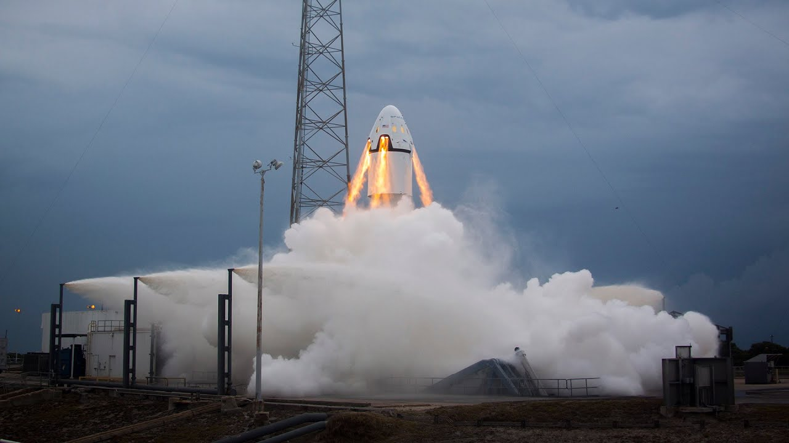
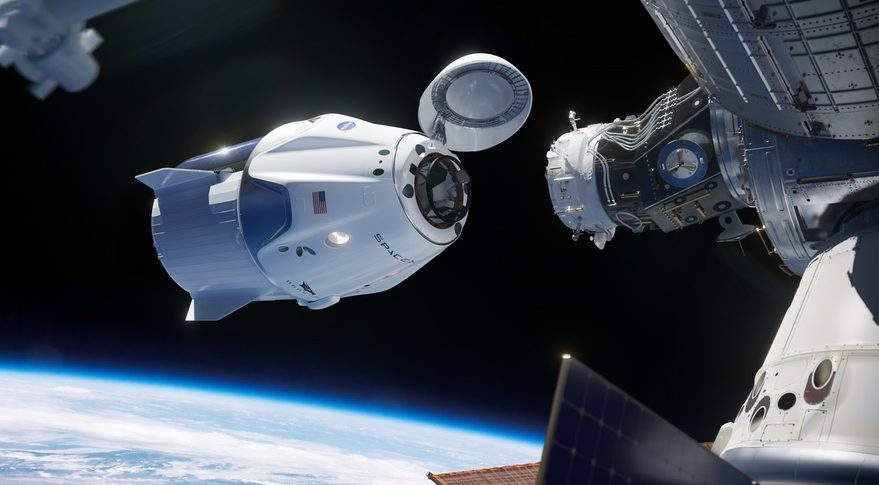

Historie
Dne 19. ledna 2020 byla s kabinou C205.1 provedena zkouška záchranného systému za letu. Raketa s připojenou lodí Crew Dragon odstartovala z floridské rampy LC-39A a po 85 sekundách letu (ve fázi maximálního aerodynamického namáhání), pomocí osmi motorů SuperDraco, se modul oddělil od nosné rakety a pomocí padáků přistál v oceánu. První pilotovaný start Crew Dragonu se uskutečnil 30. května 2020. Testovací let DM-2 vedl k ISS, kde dva astronauti působili až do srpna. Loď úspěšně přistála 2. srpna 2020. Start prvního operačního letu Crew-1 proběhl 16. listopadu 2020.
Součanost
Díky Dragonu 2 se NASA osamostatnila od ruského Sojuzu. Dnes se loď používá jako hlavní dopravní prostředek USA pro cestu na ISS. Dragon 2 také funugje jako komerční kosmická loď v rámci misí Inspiration. Tuto loď si také zvolil japonský miliardář Jusaku Maezawa pro jeho cestu umělců kolem měsíce, na které poletí i čech Yemi A.D.
Budoucnost

Agentura NASA a firma SpaceX podepsaly 22. září speciální neplacenou dohodu. Obě strany se navzájem zavázaly, že vypracují studii, která rozvine myšlenku, kterou předložila firma SpaceX ve spolupráci s programem Polaris. Jádrem této myšlenky je návrh posunout Hubbleův teleskop pomocí pilotované kosmické lodi Crew Dragon na vyšší oběžnou dráhu. A pozor – ačkoliv je dohoda o studii teprve čerstvá a vše je vlastně na začátku, už teď je počítáno s tím, že by americká vláda za tuto službu nic nezaplatila. NASA uvádí, že nemá žádné plány na provedení či financování servisní mise k Hubbleovu teleskopu, či jakéhokoliv projektu, který by konkuroval tomuto novému návrhu. Úkolem aktuálně dohodnuté studie má být rozbor pro kosmickou agenturu, který by NASA pomohl lépe porozumět možnostem, které nabízí komerční firmy.